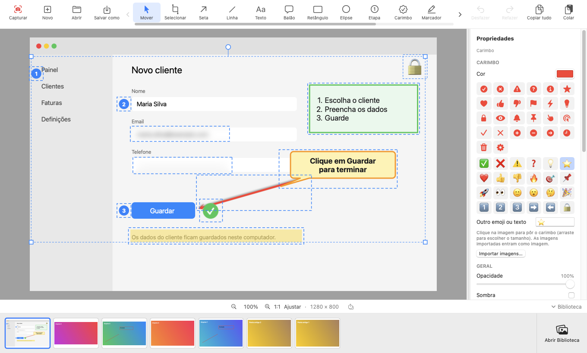

T O T H
Captura. Anota. Grava. Edita.
Uma só app para o Mac que faz o trabalho de quatro, inteiramente no seu computador. Sem conta, sem nuvem, sem telemetria. Software livre (MIT).
macOS 15 ou superior · Apple Silicon e Intel · versão 0.6.4 · todas as versões

🧩 Uma app em vez de quatro
Capturar, anotar, gravar e editar vídeo costumam viver em apps diferentes, cada uma com a sua licença e a sua nuvem. O Toth junta as quatro tarefas numa só, e o que sai de uma entra diretamente na seguinte.
| Tarefa | Normalmente precisa de… | Toth |
|---|---|---|
| 📸 Capturar | uma app de capturas (região, janela, página por rolagem) — Shottr, CleanShot X, Snagit… | ✓ |
| ✏️ Anotar | um editor de anotações (setas, texto, etapas, pixelização, reparo) — Skitch, Monosnap… | ✓ |
| 🎥 Gravar | um gravador de ecrã (área ou janela, áudio do sistema, microfone) — QuickTime, Kap, Loom… | ✓ |
| ✂️ Editar vídeo | um editor de vídeo (cortes, anotações com tempo, música, narração, GIF) — iMovie, ScreenFlow… | ✓ |
| 🔒 Privacidade | confiar que nada sai do computador | 100 % local |
| 💶 Preço | três ou quatro licenças | Gratuito · MIT |
O Toth cobre o essencial de cada tarefa; não tem legendas automáticas, efeitos nem transições, e não partilha online (por decisão de projeto). Todas as marcas pertencem aos respetivos donos; o Toth não é afiliado nem recomendado por essas empresas.
O que só o Toth junta
Não é uma lista de ferramentas: é a forma como se ligam.
Captura → anotação → vídeo, sem mudar de app
A mesma barra de ferramentas anota uma imagem e um vídeo. Uma seta sobre um fotograma tem início e fim e pode seguir o que se move.
Nada é destrutivo
Pixelização, desfoque, reparo, recortes, cortes de vídeo: camadas que muda ou tira amanhã. O original nunca é alterado; tudo reabre como deixou.
Texto da imagem: copiar e editar
Reconhece o texto de qualquer captura no Mac, sem rede. ⌘C copia; um duplo clique torna-o editável no mesmo estilo: tamanho, cor, negrito e a fonte mais parecida, com o original apagado por baixo.
Reparo e seleção a sério
Preencher apaga um elemento a partir do que o rodeia; Clonar cobre-o com outra zona. A varinha seleciona por cor, e a área levanta-se, duplica-se, apaga-se ou preenche-se. Pintar muda a cor de uma zona com um clique, e Cortar faixa tira uma faixa do meio e junta as duas partes.
A tela segue o conteúdo
Arraste uma seta para fora da imagem e a área cresce; volte com ela e encolhe. Mova, rode e redimensione a própria captura sem a estragar.
Nitidez de píxel
Captura e gravação à resolução nativa, zoom 1:1 em píxeis do ecrã, H.264 com débito alto. O que vê é o que fica.
Privacidade verificável
O único pedido de rede é a procura de atualizações (desligável), verificada por SHA-256 e assinatura. O código é aberto.
Capturar
Região com o ecrã congelado e sugestão automática do elemento ou da janela (ao tamanho exato, mesmo tapada), página inteira por rolagem, ecrã completo, texto do ecrã (OCR) e fundo limpo. Atalho global ⌃⇧4.
Anotar
Setas e linhas (retas ou curvas), texto, balões, formas, etapas numeradas, carimbos, marcador, pixelização, desfoque, reparo, Pintar, Cortar faixa e texto da imagem. Estilos rápidos por ferramenta, selecionar área, rodar, alinhar, agrupar, camadas.
Gravar
Área ou janela em MP4 (H.264 + AAC), áudio do sistema e microfone à escolha em faixas separadas, pausar e retomar.
Editar vídeo
Cortes ao quadro, blocos que se arrastam, anotações com início e fim, música, narração, volume e fade, velocidade por trecho. MP4, GIF ou só áudio.
Organizar
Biblioteca com pesquisa por nome, data, texto das anotações e texto dentro da imagem (OCR local). Capturas com nome, pasta à sua escolha, exportação com ⌘E.

O editor de vídeo
- Três linhas (vídeo, áudio do sistema, microfone) mais música, narração e anotações.
- Anotações com tempo: setas, texto, pixelização… com início e fim, que podem seguir uma zona em movimento.
- Não destrutivo: o vídeo original não muda; desfazer, refazer, e a edição volta ao reabrir.
- Saída: MP4 completo, GIF animado ou só o áudio (M4A).
Novidades da versão 0.6.4
Ferramentas que ficam ativas para pôr vários objetos seguidos, miniaturas com botões, ícone da app à escolha e copiar tudo com os elementos editáveis.
A ferramenta fica ativa
Depois de desenhar, a ferramenta continua escolhida: outra seta, outro balão, outro carimbo, sem voltar à barra. Esc sai. O objeto acabado de pôr ajusta-se ali mesmo.
Miniaturas com botões
Ocultar e Lixo em cada miniatura, ⌘⌫ para apagar, e o que escolhe na biblioteca fica em primeiro lugar na faixa.
Ícone à escolha
O original, quatro alternativos ou qualquer imagem sua, ajustada ao formato dos ícones do macOS.
Copiar tudo, colar elementos
Para outras apps vai a imagem final. Dentro do Toth, colar traz os elementos todos, editáveis, de uma captura para outra.
Seletor que adivinha
Da 0.6.2: ao capturar, o Toth sugere o botão, painel ou campo sob o rato, ou a janela inteira. Enter aceita; arrastar ignora.
Texto do ecrã num gesto
Da 0.6.2: marque uma área e carregue no botão de texto. O texto é reconhecido no Mac, fica copiado e abre numa janela editável.
Uma alternativa gratuita ao Snagit, CleanShot X e Shottr
Se procura uma app de capturas para Mac sem licença, sem conta e sem nuvem, o Toth cobre o essencial destas três. E dizemos também quando a outra é a escolha certa.
Toth ou Snagit
O que o Toth também faz: captura de região, janela e página por rolagem, etapas numeradas, texto reconhecido e editável, Cortar faixa, estilos rápidos, gravação de ecrã e cortes de vídeo. Gratuito e de código aberto.
Fique com o Snagit se precisa de Windows, de modelos e guias passo a passo prontos, ou de partilhar diretamente para serviços online e em equipa.
Toth ou CleanShot X
O que o Toth também faz: captura com o ecrã congelado, janela mesmo tapada, rolagem, fundo limpo sem ícones, texto do ecrã (OCR), gravação em MP4 ou GIF. Tem ainda um editor de vídeo com anotações com tempo.
Fique com o CleanShot X se quer ligações de partilha na nuvem, capturas afixadas a flutuar no ecrã ou fundos decorativos para redes sociais.
Toth ou Shottr
O que o Toth também faz: captura rápida por atalho, rolagem, OCR local e anotações. Acrescenta edição que reabre (nada é destrutivo), Reparo, gravação de ecrã e editor de vídeo.
Fique com o Shottr se quer a app mais pequena e leve possível, ou se mede píxeis e apanha cores do ecrã todos os dias.
Comparação feita de boa-fé em novembro de 2026; as outras apps evoluem, confirme nos sites delas. Todas as marcas pertencem aos respetivos donos; o Toth não é afiliado nem recomendado por essas empresas.
Instalar
macOS 15 ou superior. Apple Silicon e Intel.
Descarregar
Descarregue Toth-0.6.4.zip, descomprima e arraste Toth.app para Aplicações.
Primeira abertura
A app ainda não está notarizada: o macOS mostra «Toth não aberto». Clique OK, vá a Definições do Sistema → Privacidade e Segurança → Segurança → Abrir mesmo assim.
Permissão guiada
O Toth verifica a Gravação de Ecrã e, se faltar, guia-o em 3 passos. É a única permissão obrigatória; o microfone só se o ligar ao gravar, e a Acessibilidade é opcional (sugestão exata de elementos).
As capturas ficam em ~/Pictures/TothCapture (pasta alterável nas Preferências). As atualizações são verificadas por SHA-256 e assinatura e podem desligar-se nas Preferências. Desinstalar: arraste a app para o Lixo.
☕ Gostou do Toth?
O projeto é gratuito e livre, e vai continuar a sê-lo. Se quiser ajudar a mantê-lo, pode apoiar de forma voluntária. Nada na app depende disso.
♥ Apoiar no PayPal